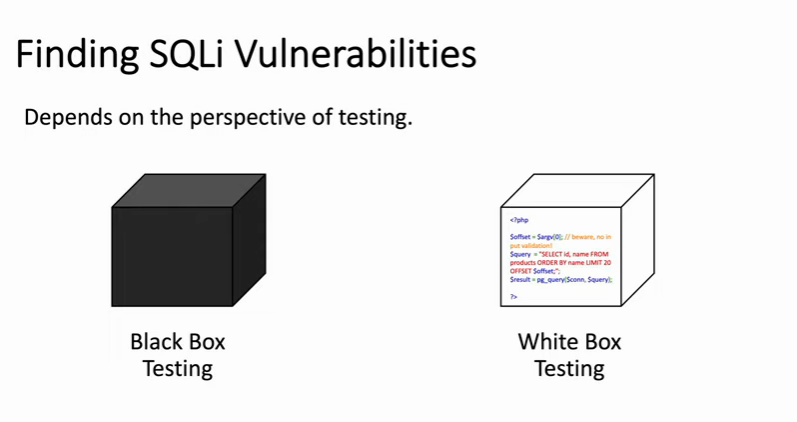
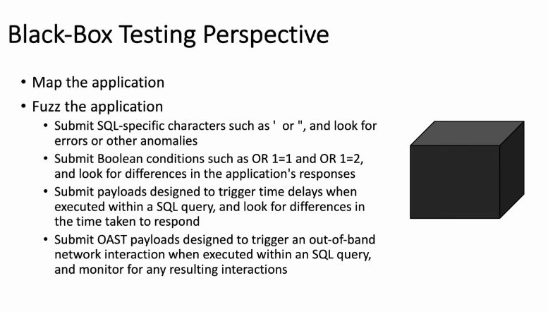
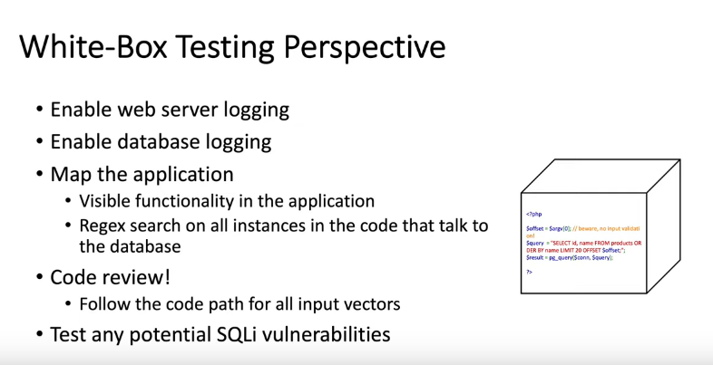

FINDING_SQL_INJECTION_TESTING!
• Black Box Testing:→ when the tester is given little to no info about the application such as just a web url so really realistic
• White Box Testing:→ tester is given complete access to the web application and also stuff such as Source Code
# Black Box Testing
# White Box Testing
